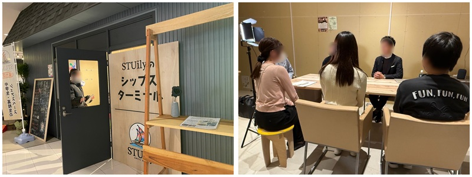
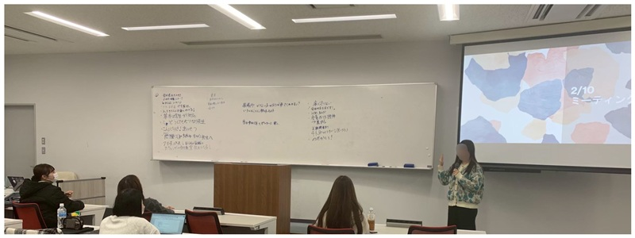
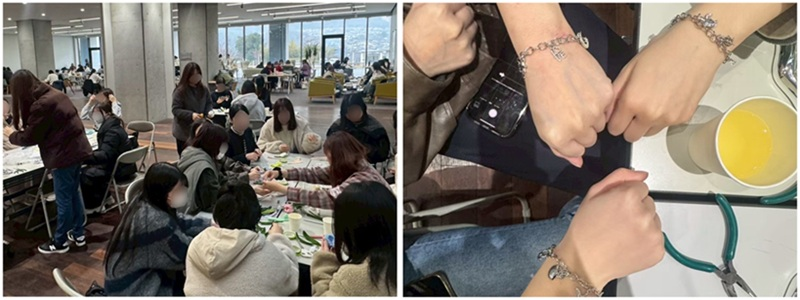
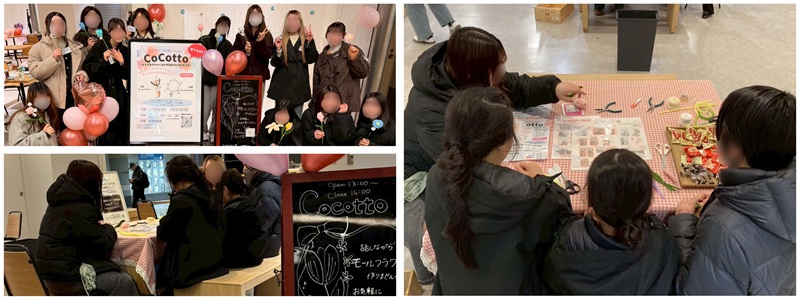
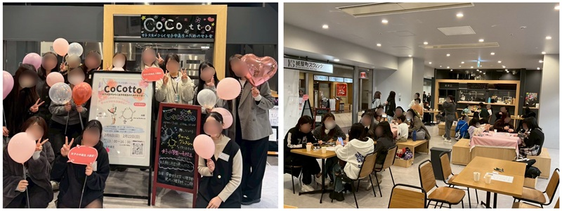

- トップ >
- これまでの活動
これまでの活動
ここ研の歴史
「ここ研」の意味
Cozy Corner（居心地の良い場所）が由来です。 「ここから始まる ここにきて ここに居ていい」という意味が込められています。頭文字を取って「ここ」、居場所研究をするチームということから「研」、組み合わせて「ここ研」となりました。
２０２４年度

まず始めに「居場所とは何か？」という疑問を掲げ、論文を集めて居場所の定義を行いました。広島県で居場所づくりを行う団体は何があるのかを調べ、広島県で居場所提供を行っている施設にフィールドワークに行きました。どんな居場所の形が実際にあるのかをたくさん見たり、提供者に話を伺いました。じっさいにわたしたちはどんな居場所を提供することが可能か、イメージを膨らませました。
２０２５年度

７月から本格的に活動を開始しました。新しい１年生、２年生のメンバーが加入しました。居場所の定義や、居場所を必要としている人は誰なのかなどをみんなで話し合い、形にしていきました。学年関係なく、みんなが意見を言い合えるところが、ここ研の良さです。話し合いを重ねるうちに先輩後輩の仲がとてもよくなりました。
２０２５年１２月 大学内でイベント開催

初めて実戦を行いました。CoCottoの予行練習として大学内で行いました。モールフラワー作りとチャームブレスレット作りを通して交流の場を設けました。興味を持った学生がたくさん集まり、飲み物やお菓子を食べながらいろいろなお話をすることができました。参加者がみんな笑顔になっていたためとても嬉しかったです。
２０２６年２月８日 CoCotto開催

シャレオ西側にある「紙屋町スウィング」というフリースペースでイベントを開催しました。モールフラワー作りを行いました。初めての大学外での開催だったため、成功するか不安でしたがほっとできる居場所となりました。大雪の悪天候でしたが、CoCottoに興味を持って１０名程度の参加者が集まりました。
２０２６年２月２２日 CoCotto開催

２回目のイベントを「紙屋町スウィング」で開催しました。チャームブレスレット作りを行いました。天候にも恵まれ、たくさんの人がCoCottoに訪れてくれました。「楽しかった」「また行きたい」という声をたくさんいただくことができました。